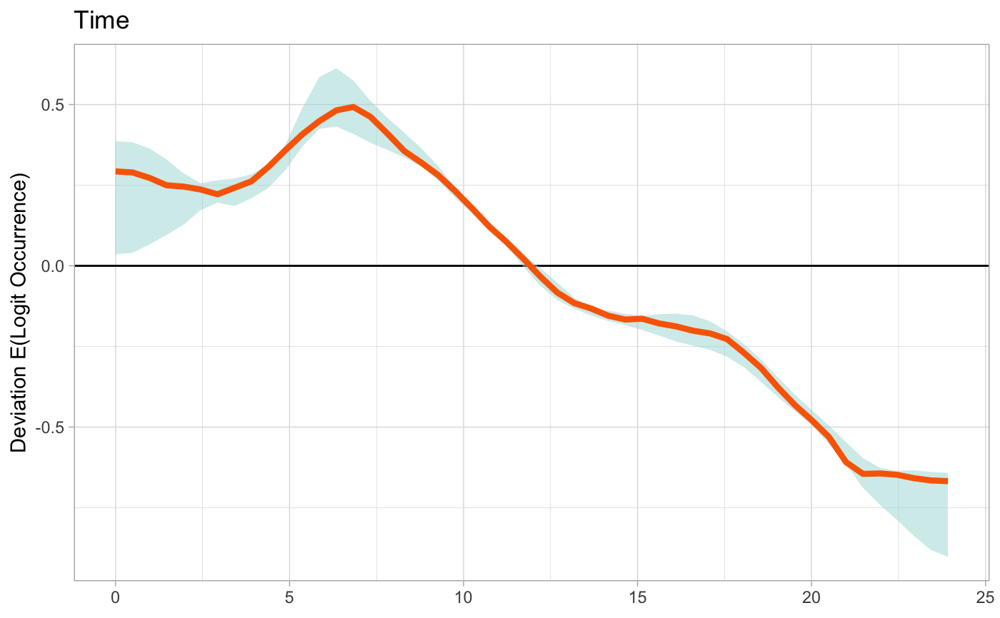

For a given eBird Status and Trends species, produce a line plot showing the partial dependence (PD) relationship for a given predictor. Two options for smoothing are provided.
plot_pds( pds, predictor, ext, bootstrap_smooth = TRUE, show_stixel_pds = FALSE, show_quantiles = FALSE, n_bs = 100, ss_equivalent = 10, k = 25, ci_alpha = 0.05, gbm_n_trees = 500, ylim = NULL, plot = TRUE )
| pds | data frame; partial dependence data from |
|---|---|
| predictor | character; single predictor name to plot PD for. For a full list of predictors, and their associated definitions, see ebirdst_predictors. |
| ext | ebirdst_extent object; the spatiotemporal extent over which to calculate PDs. This is required, since results are less meaningful over large spatiotemporal extents. |
| bootstrap_smooth | logical; the ideal visualization of the PD data is a
pointwise GAM smoothing of the individual stixel PD values. This argument
specifies whether this should be done directly on the full PD dataset
( |
| show_stixel_pds | logical; whether to plot the individual stixel PD values as semi-transparent lines. |
| show_quantiles | logical; adds a band for the upper (90th) and lower (10th) quantiles of the individual stixel PD values. These are calculated using quantile regression. |
| n_bs | int; number of GAM bootstrap iterations when estimating PD
confidence intervals. Ignored if |
| ss_equivalent | int; when bootstrapping to estimate PD confidence
intervals, this argument specifies the size of the subsample of the
original data. In particular, |
| k | integer; number of knots to use in the GAM when smooth the PD relationship. |
| ci_alpha | numeric; alpha level of confidence intervals. Default is 0.05. |
| gbm_n_trees | integer; number of trees to fit in the GBM when estimating
quantiles. Ignored if |
| ylim | numeric; 2-element vector to pre-define the y-limits of plotting.
In the format |
| plot | logical; whether to plot the PD relationships or just return data. |
Plots the smoothed partial dependence relationship for the specified predictor and returns a data frame of the smoothed curve with confidence intervals.
#># or get the path if you already have the data downloaded path <- get_species_path("example_data") # load predictor dependence data pds <- load_pds(path) # define a spatiotemporal extent to plot data from bb_vec <- c(xmin = -86, xmax = -83, ymin = 41.5, ymax = 43.5) e <- ebirdst_extent(bb_vec, t = c("05-01", "05-31")) # for testing, run with 5 bootstrap iterations for speed # in practice, best to run with the default number of iterations (100) pd_smooth <- plot_pds(pds, "solar_noon_diff", ext = e, n_bs = 5)#> Rows: 25 #> Columns: 4 #> $ x <dbl> -11.986388889, -10.987245370, -9.988101852, -8.988958333, -7… #> $ pd_median <dbl> 0.0039492026, 0.0042300929, 0.0045290129, 0.0048279329, 0.00… #> $ pd_lower <dbl> 0.0029201129, 0.0033816788, 0.0038660641, 0.0043504495, 0.00… #> $ pd_upper <dbl> 0.0052553869, 0.0054844222, 0.0057194292, 0.0061228403, 0.00…# }